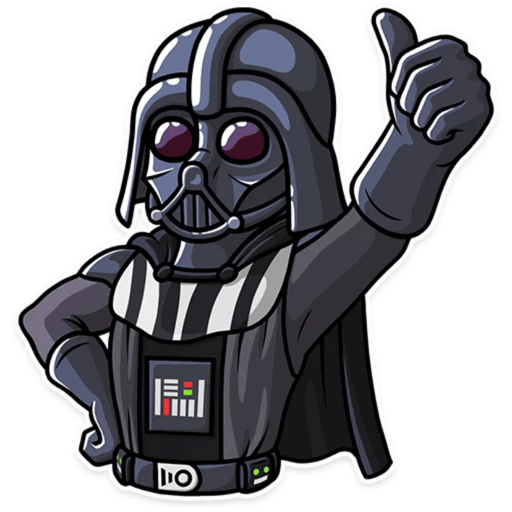
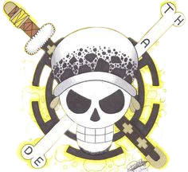
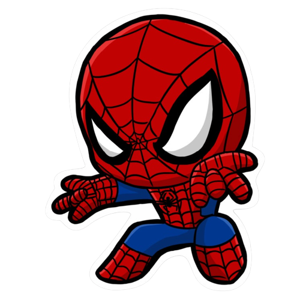

Apresentação
Olá, meu nome é Richard Artur Rodrigues Costa, tenho 22 anos, moro atualmente em Contagem-MG, estudante de Ciências da Computação na Faculdade Estácio Belo Horizonte Prado, Noivo da ❤️Larissa David❤️, atualmente faço estágio na Defensoria Pública de Minas Gerais no setor de desenvolvimento de projetos. Tenho formação como Técnico de Enfermagem no ano de 2015, e trabalho desde os 14 anos.
Quem Sou!
Sou uma pessoa determinada e proativa, sempre busco melhorar os meus conhecimentos e correr atrás de novidades, não desisto fácil dos meus objetivos, faço sempre meu melhor às atividades propostas a mim. Gosto do universo Geek, mas em especial do universo Star Wars , Marvel quadrinho e do MCU, também curto anime, principalmente One-Piece , meu heroi favorito é o Homem-Aranha , mas também do Batman e do Justiceiro, meu clube do coração é o cruzeiro , torcedor apaixonado mas não doente, assisto/acompanho os jogos em casa ou quando estou com tempo livre..
Músicas: Gosto muito de ouvir músicas para relaxar, meu estilo favorito é o rock sendo a minha banda preferida o Slipknot, mas também curto muito músicas do estilo vintagens dos anos 90's e 80's. Meu gosto pelo rock começou em um trabalho de escola do ensino médio na disciplina de inglês, onde simulamos um show de banda, desde então comecei a estudar sobre as bandas de rock em geral e me tornei fã desse estilo musical.
Filmes/Séries: Tenho o hábito de assistir nas horas vagas e para relaxar, me interesso mais por filmes de ação, comédia e ficção. Me interessa ainda mais quando esses entretenimentos estão relacionados ao universo de Star Wars e o da Marvel. Meus atores favoritos são Bruce Willis, Jackie Chan, Tom Cruise e o Liam Neeson, sendo esse último o meu favorito de todos.
Game: Sou um apaixonado por jogos, amo jogar um jogo de FPS, MMORPG e jogos de estratégias, meus títulos favoritos são: CA (Combat-Arms), Tom Clancy's Rainbow Six Siege, WoW (World of Warcraft), Dofus, Black, Mortal-Kombat (franquia) e muitos outros ... 😁
Hobbies: Sou caseiro como você pôde perceber, minha maior diversão geralmente encontro em casa: assistindo aos meu filmes, jogando um bom game e mexer no PC. Mas também gosto de sair e fazer coisas novas, desde que com boas companhias. Prazer, esse sou eu!! 🤓